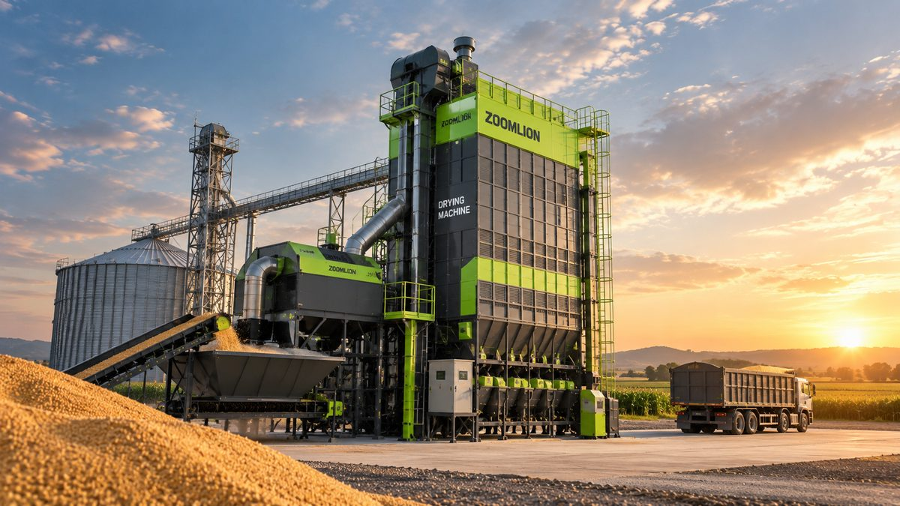

Kementan Siapkan 38.969 Unit Alsintan 2026: Pilih Mesin yang Sesuai Lahan
Puluhan ribu alat mesin pertanian disiapkan tahun ini. Tantangannya, memastikan mesin benar-benar terpakai dan sesuai kebutuhan petani.
Ministry Prepares 38,969 Farm Machinery Units for 2026: Choose Machines That Fit Your Land
Tens of thousands of farm machines are being prepared this year. The challenge is making sure they are actually used and match farmers' needs.
印尼农业部2026年筹备38,969台农机：选择与田地相匹配的机器
今年将筹备数万台农机。挑战在于确保机器真正投入使用，并符合农民的实际需求。

Mekanisasi pertanian terus menjadi andalan pemerintah untuk meningkatkan produksi pangan. Pada 2026, Kementerian Pertanian menyiapkan 38.969 unit alat dan mesin pertanian (alsintan) baru, mulai dari traktor roda empat, pompa air, rice transplanter, hingga 138 unit drone pertanian.
Namun, jumlah mesin yang banyak belum tentu langsung berdampak. Survei BPS tahun 2023 mencatat baru 46,84 persen dari 28,19 juta petani Indonesia yang memakai alat mesin pertanian modern atau teknologi digital dalam usaha taninya.
Mesin Harus Sesuai Lahan
Akademisi Universitas Andalas mengingatkan bahwa modernisasi alsintan perlu disesuaikan dengan luas lahan yang benar-benar dimiliki petani. Mayoritas petani Indonesia adalah petani kecil, sehingga mesin besar yang dirancang untuk lahan sangat luas belum tentu efektif.
Pemerintah daerah juga mengingatkan agar alsintan yang diterima benar-benar dipakai dan dirawat, bukan hanya menjadi pajangan.
Panduan Memilih Mesin untuk Padi
Tanam: Rice Transplanter
Rice transplanter mempercepat penanaman dan membuat jarak tanam lebih seragam. Zoomlion Seri G tersedia dalam versi 6 baris (G630 dan G830) dan 8 baris (G825), dengan 7 pilihan jarak tanam 100–240 mm dan kedalaman tanam 10–55 mm. Lihat detail Seri G.
Panen: Combine Harvester
Menurut Kementan, penggunaan combine harvester dapat menekan susut panen menjadi sekitar 3–5 persen, lebih rendah dibanding panen manual.
Untuk lahan kecil hingga menengah, Zoomlion ZL88 (88 HP, lebar potong 2,0 m) mencapai kapasitas lapangan hingga 0,66 ha/jam. Lihat detail ZL88.
Untuk lahan menengah hingga besar, ZL105 (105 HP, lebar potong hingga 2,4 m) mencapai kapasitas lapangan hingga 0,86 ha/jam. Keduanya diklaim mampu menekan kehilangan gabah hingga serendah 1,5%. Lihat detail ZL105.
Pascapanen: Mesin Pengering Gabah
Gabah yang terlambat dikeringkan, terutama saat panen di musim hujan, mudah turun mutunya. Kementan sendiri mendorong penggunaan dryer untuk meningkatkan rendemen giling dan mutu beras serta menurunkan kehilangan hasil.
Zoomlion menyediakan dryer batch sirkulasi mulai kapasitas 10–15 ton hingga 30 ton per batch, dengan sumber panas biomassa seperti sekam padi. Lihat detail dryer 10–15 ton.
Perhatikan Layanan Purna Jual
Pastikan suku cadang dan teknisi mudah dijangkau. Mesin yang berhenti di tengah musim tanam atau panen bisa menimbulkan kerugian yang jauh lebih besar daripada biaya servisnya.
Kesimpulan
Mekanisasi akan berdampak nyata jika mesinnya sesuai skala lahan, dipakai secara rutin, dan dirawat dengan baik. Sebelum membeli atau mengajukan alsintan, hitung dulu luas lahan, pola tanam, dan kebutuhan di setiap tahap, dari tanam hingga pascapanen.
Bingung memilih mesin yang pas? Tim PT Diesel Agri Sukses Sejahtera siap membantu menghitung kebutuhan alsintan Zoomlion sesuai luas lahan Anda.
Butuh saran? Hubungi kami.
Sumber: Sinar Tani, ANTARA Sumbar, ANTARA Sumbar, Tempo, Undercover Channel, Swadaya Online.
Farm mechanisation remains a pillar of the government's drive to raise food production. In 2026, the Ministry of Agriculture is preparing 38,969 new units of farm machinery, from four-wheel tractors, water pumps, and rice transplanters to 138 agricultural drones.
But more machines do not automatically mean more impact. A 2023 BPS survey found that only 46.84 percent of Indonesia's 28.19 million farmers use modern farm machinery or digital technology.
Machines Must Match the Land
Academics at Andalas University point out that mechanisation should be matched to the land farmers actually own. Most Indonesian farmers are smallholders, so large machines designed for very large fields are not always effective.
Local governments have also reminded recipients to actually use and maintain the machinery they receive, not just leave it on display.
A Guide to Choosing Rice Machinery
Planting: Rice Transplanters
Rice transplanters speed up planting and make plant spacing more uniform. The Zoomlion G Series comes in 6-row (G630 and G830) and 8-row (G825) versions, with 7 plant spacing settings from 100 to 240 mm and planting depth of 10–55 mm. View G Series details.
Harvesting: Combine Harvesters
According to the Ministry of Agriculture, combine harvesters can cut harvest losses to around 3–5 percent, lower than manual harvesting.
For small to medium fields, the Zoomlion ZL88 (88 HP, 2.0 m cutting width) reaches a field capacity of up to 0.66 ha/hour. View ZL88 details.
For medium to large fields, the ZL105 (105 HP, cutting width up to 2.4 m) reaches up to 0.86 ha/hour. Both are claimed to keep grain loss as low as 1.5%. View ZL105 details.
Post-Harvest: Grain Dryers
Paddy that is dried late, especially when harvested in the rainy season, quickly loses quality. The Ministry itself encourages dryers to raise milling yield and rice quality and to reduce losses.
Zoomlion offers recirculating batch dryers from 10–15 tonnes up to 30 tonnes per batch, using biomass heat sources such as rice husk. View 10–15 tonne dryer details.
Look at After-Sales Support
Make sure spare parts and technicians are within easy reach. A machine that stops mid-season can cause losses far greater than the cost of servicing.
Conclusion
Mechanisation makes a real difference when machines fit the scale of the land, are used regularly, and are well maintained. Before buying or applying for machinery, work out your land area, cropping pattern, and needs at each stage, from planting to post-harvest.
Not sure which machine is right? The PT Diesel Agri Sukses Sejahtera team can help calculate the Zoomlion machinery you need for your land.
Need advice? Contact us.
Sources: Sinar Tani, ANTARA Sumbar, ANTARA Sumbar, Tempo, Undercover Channel, Swadaya Online.
农业机械化一直是印尼政府提高粮食产量的重要支柱。2026年，印尼农业部筹备了38,969台新农机，包括四轮拖拉机、水泵、插秧机以及138架农业无人机。
然而，机器数量多并不等于立即见效。印尼中央统计局（BPS）2023年的调查显示，在2,819万名印尼农民中，仅有46.84%使用现代农机或数字技术。
机器必须与田地相匹配
安达拉斯大学的学者提醒，农业机械化应与农民实际拥有的土地面积相适应。印尼大多数农民是小农户，为大面积农场设计的大型机器未必有效。
地方政府也提醒，收到的农机要真正使用和保养，而不是闲置当摆设。
水稻农机选购指南
插秧：插秧机
插秧机可加快栽插速度，使株距更均匀。中联重科G系列有6行（G630和G830）和8行（G825）两种版本，株距可在100–240毫米之间7档调节，栽插深度10–55毫米。查看G系列详情。
收获：联合收割机
据印尼农业部介绍，使用联合收割机可将收获损失降至约3–5%，低于人工收获。
对于中小型地块，中联重科ZL88（88马力，割幅2.0米）作业效率最高可达0.66公顷/小时。查看ZL88详情。
对于中大型地块，ZL105（105马力，割幅最宽2.4米）作业效率最高可达0.86公顷/小时。据称两款机型的籽粒损失率均可低至1.5%。查看ZL105详情。
产后：谷物烘干机
稻谷烘干不及时，尤其是雨季收获时，品质很快下降。印尼农业部也鼓励使用烘干机，以提高出米率和大米品质，并减少损失。
中联重科提供每批10–15吨至30吨的循环式批次烘干机，可使用稻壳等生物质热源。查看10–15吨烘干机详情。
重视售后服务
确保配件和技术人员方便获得。机器在播种或收获季中途停机造成的损失，可能远超维修费用。
结论
只有当机器与土地规模相匹配、经常使用并妥善保养时，机械化才能真正见效。在购买或申请农机之前，请先计算土地面积、种植模式以及从播种到产后各环节的需求。
不知道选哪款机器？ PT Diesel Agri Sukses Sejahtera 团队可根据您的土地面积，帮助测算所需的中联重科农机。
需要建议？联系我们。
资料来源： Sinar Tani, ANTARA Sumbar, ANTARA Sumbar, Tempo, Undercover Channel, Swadaya Online.